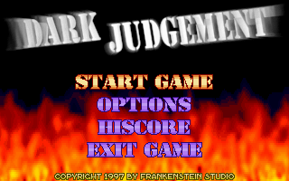
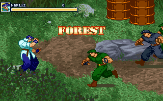

名稱：地下裁判團／暗黑拳王 (Dark Judgement，英文版)
簡介：梵太師1997年出品的動作打鬥遊戲，初始以「地下裁判團」為名發行，1998年移植至
Windows，改以「暗黑拳王」名稱發行 [待補]。


備註：本版為1998 Windows版。
保護：光碟
備註：DOS版若無法安裝，可在Windows上執行SETUP.EXE安裝後，再以DosBox執行（需先執行
SETSOUND.EXE設定音效）。記得修改CONFIG.INI裡的MUSIC DEVICE，若是D磁碟，則將
數字改成4。
拷貝下列檔案到安裝目錄，再執行SETUP.EXE即可：
備註：Win版VirtualBox無法執行，虛擬機請使用VMware。Win64實體機需搭配dgVoodoo。
備註：Win版XP以上系統必須將Dark Judgement.EXE設成Win9x相容。
檔案：dj-dos.rar = 1997年DOS版
操作：（可在Option中設定）
Alt = 攻擊／撿取
Ctrl = 跳躍